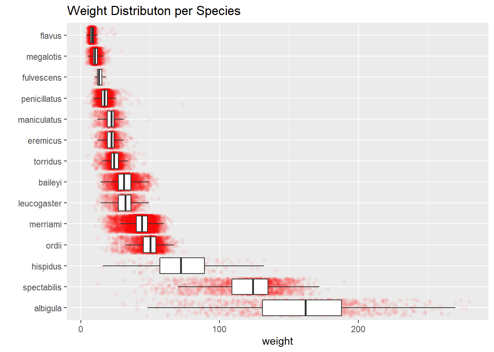

library(tidyverse)Lab 5
Import Libraries
Read Data
surveys <- read_csv(here::here('Week 2','Lab 2','surveys.csv'),col_types = cols())1. Revisiting Lab 2
surveys |>
mutate(species = as.factor(species)) |>
ggplot(mapping = aes(x = weight,
y = fct_reorder(.f = species,
.x = weight,
.fun = median,
.desc = TRUE))) +
geom_jitter(color = 'red', alpha = .05) +
geom_boxplot(outlier.shape = NA) +
labs(y = '') +
ggtitle('Weight Distributon per Species')
2. Time Series Plot
surveys |>
group_by(species, date) |>
summarise(avg_weight = mean(weight)) |>
ggplot(mapping = aes(x = date,
y = avg_weight,
color = species)) +
geom_line()surveys |>
group_by(species, year) |>
summarise(avg_weight = mean(weight)) |>
ggplot(mapping = aes(x = year,
y = avg_weight,
color = species)) +
geom_line()surveys |>
mutate(species = as.factor(species)) |>
group_by(species, year) |>
summarise(avg_weight = mean(weight)) |>
ggplot(mapping = aes(x = year,
y = avg_weight,
color = fct_reorder(.f = species,
.x = avg_weight,
.fun = mean,
.desc = TRUE))) +
geom_line() +
labs(color='Species',
y = '',
title = 'Average Weight Over Time')3. Captures Over the Week
surveys |>
mutate(day_of_week = as.factor(day_of_week)) |>
drop_na() |>
group_by(day_of_week) |>
count() |>
ggplot(mapping = aes(x = day_of_week,
y = n)) +
geom_col(stat="identity") +
labs(x = 'Day of Week',
y = '',
title = 'Capture Count per Weekday')surveys |>
mutate(day_of_week = as.factor(day_of_week)) |>
drop_na() |>
group_by(day_of_week) |>
count() |>
ggplot(mapping = aes(x = fct_relevel(.f = day_of_week, c('Mon', 'Tue', 'Wed',
'Thu', 'Fri', 'Sat', 'Sun')),
y = n)) +
geom_col(stat="identity") +
labs(x = 'Day of Week',
y = '',
title = 'Capture Count per Weekday')surveys |>
mutate(day_of_week = as.factor(day_of_week)) |>
drop_na() |>
group_by(day_of_week) |>
count() |>
ggplot(mapping = aes(x = fct_collapse(.f = day_of_week, weekday = c('Mon', 'Tue', 'Wed',
'Thu', 'Fri'), weekend = c('Sat', 'Sun')),
y = n)) +
geom_col(stat="identity") +
labs(x = 'Day of Week',
title = 'Capture Count Weekday vs. Weekend')